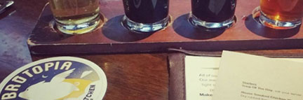
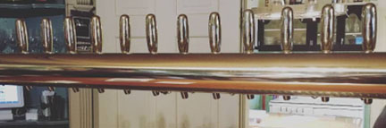

Great food and beer; what’s better?!
Sometimes we plan a day to go brewery hopping, but forget not all of them serve food. Too much beer on an empty stomach can be a dangerous day. Brutopia in Cranston RI, not only serves their own brews from their brew room Revival Brewing Co., but also serve up some of the best barbeque any pub in RI has to offer.
A brewery so fancy, it would impress your Mother.
Ever thought you drink beer in an old 1800’s stylized house? Well, now you can! Not only does GreySail brewery have an impressive line of unique beers, but easily on of the most unique tap room you will ever see. It’s a must see, especially the golden tap rig you get your beer poured from.